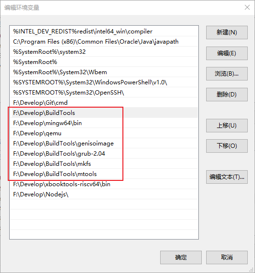
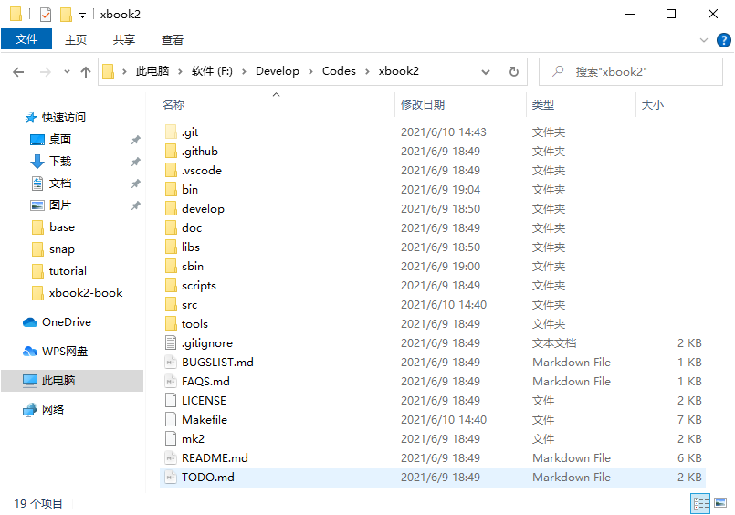
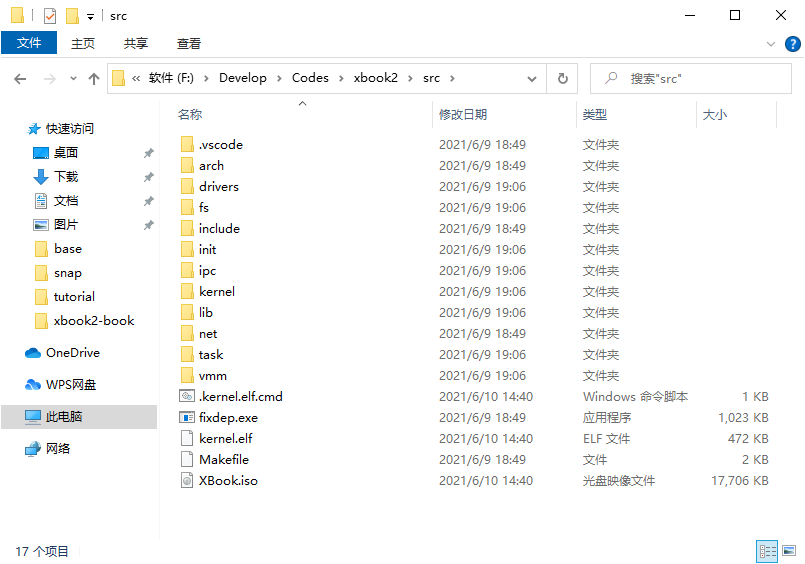
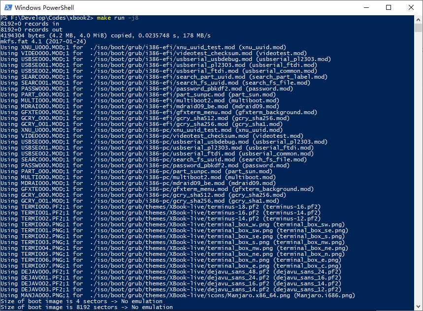

x86-qemu平台上手指南
本文档将介绍如何在qemu虚拟机中启动运行xbook2内核。
qemu介绍
QEMU是一套由法布里斯·贝拉(Fabrice Bellard)所编写的以GPL许可证分发源码的模拟处理器，在GNU/Linux平台上使用广泛。它可以模拟x86,x64,arm,riscv等处理器。我们这里使用的是qemu的x86模拟器版本。
准备工作
一. Windows环境搭建
1.下载我提取的工具包：BuildTools, 下载后配置解压目录环境变量到系统环境变量Path里面。（注意，如果你的电脑上已经有mingw或者cygwin环境，请把这个工具包的环境变量放到靠前的位置，不然不会执行工具包里面的程序）。
除此之外，由于支持了grub，所以需要单独的配置grub的工具环境，也是在BuildTools里面的。所以需要配置环境变量的目录如下：
BuildTools
BuildTools/genisoimage
BuildTools/grub-2.04
BuildTools/mkfs
BuildTools/mtool

！注意，如果你的环境中有gcc的编译环境，则需要把BuildTools放在最前面。
2.下载qemu最新版：Qemu 下载后安装，配置安装目录环境变量到系统环境变量Path里面，或者下载我提取的版本：Qemu-i386，下载后配置解压目录环境变量到系统环境变量Path里面。
3.如果想要用虚拟机加速，下载windows下面的qemu加速扩展程序HAXM v7.6.5，下载后安装即可。
二、Linux环境搭建
#1.安装gcc, nasm:
Ubuntu/Kali Linux: sudo apt-get install gcc nasm truncate
Red hat/Fedora/Centos: sudo yum install gcc nasm truncate
#2.安装qemu虚拟机：
Ubuntu/Kali Linux: sudo apt-get install qemu-system-x86
Red hat/Fedora/Centos: sudo yum install qemu-system-x86
#3.安装grub引导相关工具：
Ubuntu/Kali Linux: sudo apt-get install grub
Red hat/Fedora/Centos: sudo yum install grub
三、Mac环境搭建
# 1.安装 i386-gcc
brew tap nativeos/i386-elf-toolchain
brew install i386-elf-binutils i386-elf-gcc
# 2.安装 truncate nasm qemu
brew install truncate nasm qemu
# 3.安装 grub
brew install grub
四、温馨提示！
如果遇到工具链编译链接时出错，可以尝试到FAQS.md文件中寻找解决方案。
如果需要开启加速，需要将xbook2/Makefile中的QEMU_KVM := # no virutal注释掉，在最前面加一个#就可以了，变成#QEMU_KVM := # no virutal。
初识xbook2
首先，我们先看一下目录结构，了解一下代码构造。

| 目录名 | 描述 |
|---|---|
| bin | 可执行程序 |
| develop | 开发时生成的一些临时文件 |
| doc | 基础的文档 |
| libs | 基础库 |
| sbin | 管理员的可执行程序 |
| scripts | 一些makefile脚本和配置脚本 |
| src | xbook2内核的源代码 |
| tools | 常用的一些工具 |
接下来进入src看看内核源码构造。

| 目录名 | 描述 |
|---|---|
| arch | 处理器平台相关 |
| drivers | 驱动目录（平台无关驱动） |
| fs | 文件系统 |
| include | 内核头文件 |
| init | 初始化程序 |
| ipc | 进程间通信 |
| kernel | 内核其它模块 |
| lib | 内核使用的一些库 |
| net | 网络模块 |
| task | 多任务（进程/线程） |
| vmm | 虚拟内存管理 |
编译运行
make build # 构建环境
make run # 编译并运行，默认使用qemu虚拟机运行
或者
make build -j8 # 构建环境，8线程编译，加快项目编译速度
make run -j8 # 编译并运行，默认使用qemu虚拟机运行
如果环境搭建没有问题，那么当以上命令执行完成后就可以看到xbook2在qemu中运行了。
